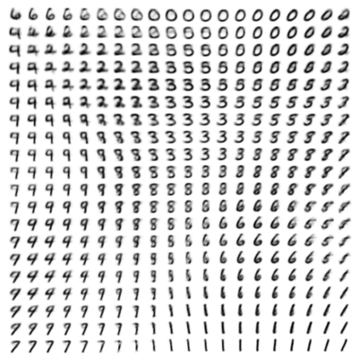

The reparameterization trick pulled randomness out of the gradient's path
Kingma and Welling's 2014 paper rewrote the encoder's random sample as a deterministic function of independent noise, making the evidence lower bound differentiable enough to train encoder and decoder together with ordinary stochastic gradient descent.
Auto-Encoding Variational Bayes
Read the paperHow can we perform efficient inference and learning in directed probabilistic models, in the presence of continuous latent variables with intractable posterior distributions, and large datasets? We introduce a stochastic variational inference and learning algorithm that scales to large datasets and, under some mild differentiability conditions, even works in the intractable case. Our contributions are two-fold. First, we show that a reparameterization of the variational lower bound yields a lower bound estimator that can be straightforwardly optimized using standard stochastic gradient methods. Second, we show that for i.i.d. datasets with continuous latent variables per datapoint, posterior inference can be made especially efficient by fitting an approximate inference model (also called a recognition model) to the intractable posterior using the proposed lower bound estimator. Theoretical advantages are reflected in experimental results.1
A generative model whose own likelihood has no closed form
Start with the model the paper wants to train. A latent code z is drawn from a simple prior p_\theta(z), typically a standard Gaussian, and a neural network decoder turns that code into a distribution over data, p_\theta(x\mid z). Fitting \theta means maximizing the marginal likelihood the model assigns to the real data, which means integrating the latent code back out: p_\theta(x) = \int p_\theta(z)\,p_\theta(x\mid z)\,dz. For a decoder built from a nonlinear multilayer network, that integral has no closed form, and z ranges over a continuous space, so there is no sum to fall back on either.1
The standard way around an intractable marginal likelihood is to maximize a lower bound instead, built from the true posterior p_\theta(z\mid x): what the latent code probably was, given the datapoint it produced. But Bayes' rule writes that posterior as a ratio with the same unsolvable integral sitting in its denominator, so it is exactly as intractable as the likelihood it was supposed to fix. The paper's actual departure is to stop trying to compute that posterior at all, and instead train a second network to approximate it. It then rewrites the resulting objective so both networks train together by ordinary backpropagation, through a single substitution in how one distribution gets sampled.1
A second network learns to approximate a posterior it cannot compute
Call the second network q_\phi(z\mid x), which the paper names a recognition model. One set of weights \phi is shared across every datapoint, rather than a separate variational parameter fit from scratch for each one, which is what makes the resulting inference procedure fast enough to run on a full dataset instead of one example at a time.1 For any choice of \phi, the true log-likelihood decomposes exactly:
A KL divergence is never negative, so \mathcal{L} can never exceed the true log-likelihood: it is a lower bound, which is why the field calls it the evidence lower bound, ELBO for short.1 Because the two terms on the right always sum to the same fixed quantity, \log p_\theta(x^{(i)}), pushing \mathcal{L} up by adjusting \phi can only come out of the KL term. Maximizing the bound and closing the gap to the true, uncomputable posterior are the same act of optimization. Expanded, \mathcal{L} splits into a reconstruction term and a second KL divergence, this one against the prior rather than the true posterior, and this is the form the paper actually optimizes:
- \mathcal{L}(\theta,\phi;x^{(i)})the bound itself: never larger than the true log-likelihood it stands in for.
- D_{\mathrm{KL}}(q_\phi\Vert p_\theta(z))the cost of the recognition model's guess drifting from the prior, subtracted so drift is penalized.
- \mathbb{E}_{q_\phi(z\mid x^{(i)})}an average over the recognition model's own samples of z, not the true posterior.
- p_\theta(x^{(i)}\mid z)the decoder's probability of the real datapoint given the sampled code: the reconstruction term.
You cannot backpropagate through a random sample
The bound above looks like something Monte Carlo can estimate on its own: draw z \sim q_\phi(z\mid x^{(i)}), plug it into both terms, average over a handful of draws. Training needs more than an estimate of the bound, though; it needs the gradient of that estimate with respect to \phi, and \phi does not sit outside the sampling step. It defines the distribution the sample comes from. Differentiating an expectation whose own distribution depends on the parameter you are differentiating against is not the case ordinary backpropagation was built to handle: there is no differentiable path through the random draw for a gradient to follow.2
One way around this borrows the score-function estimator familiar from reinforcement learning, sometimes called REINFORCE. It rewrites the gradient of the expectation as an expectation of the sample's value times the gradient of its own log-density. In symbols: \nabla_\phi \mathbb{E}_{q_\phi(z)}[f(z)] = \mathbb{E}_{q_\phi(z)}[f(z)\,\nabla_\phi \log q_\phi(z)]. That new expectation is still something a handful of samples can estimate. The paper considers exactly this estimator for the reconstruction term and sets it aside, reporting that it carries very high variance and citing Paisley, Blei, and Jordan's 2012 result on the same problem3 rather than deriving the variance itself.1 That is a real gap if the goal is to see the variance argument worked out step by step rather than take it on the strength of a citation.
Moving the randomness outside the encoder restores the gradient
The fix does not touch the score-function identity at all. It changes what gets sampled. q_\phi(z\mid x) is a distribution \phi shapes, so sampling z directly from it keeps \phi inside the random step. The fix samples something else first: an auxiliary noise variable \epsilon, drawn from a fixed distribution p(\epsilon) that \phi has no say over. z is then a deterministic, differentiable function of that noise and the input: z = g_\phi(\epsilon, x), \epsilon \sim p(\epsilon).1 All of the randomness now lives in \epsilon, entirely outside the part of the computation that depends on \phi. An ordinary reverse-mode pass reaches \phi through g_\phi the same way it reaches any other differentiable layer, because nothing about that step is random from the gradient's point of view. The change of variables also turns the expectation over q_\phi(z\mid x) into an expectation over the fixed p(\epsilon). A plain Monte Carlo average over L draws now estimates that expectation without disturbing the gradient:
\widetilde{\mathcal{L}}^{A}(\theta,\phi;x^{(i)}) = \frac{1}{L}\sum_{l=1}^{L}\Bigl[\log p_\theta(x^{(i)}, z^{(i,l)}) - \log q_\phi(z^{(i,l)}\mid x^{(i)})\Bigr], with z^{(i,l)} = g_\phi(\epsilon^{(i,l)}, x^{(i)}).1
Danilo Rezende, Shakir Mohamed, and Daan Wierstra reached the identical substitution independently, at almost the same moment, under the name stochastic backpropagation.4 Each paper's related-work section names the other rather than claiming priority. Kingma and Welling write that Rezende and colleagues "also make the connection between auto-encoders, directed probabilistic models and stochastic variational inference using the reparameterization trick we describe in this paper. Their work was developed independently of ours and provides an additional perspective on AEVB."1 Rezende and colleagues return the description almost word for word: "Our approaches were developed simultaneously and provide complementary perspectives on the use and derivation of stochastic backpropagation rules."4 Two labs reaching the same substitution at the same time, from different starting points, is itself evidence the fix was not a matter of taste.
The trick, worked through the model the paper actually trains
The general recipe leaves g_\phi unspecified. The paper's own recognition model outputs a diagonal Gaussian, q_\phi(z\mid x^{(i)}) = \mathcal{N}(z;\,\mu^{(i)},\,\mathrm{diag}((\sigma^{(i)})^2)), with the encoder network producing \mu^{(i)} and \sigma^{(i)} directly from x^{(i)}.1 For a Gaussian, the reparameterizing function g_\phi has a one-line form: shift a standard normal draw by the mean and scale it by the standard deviation.
The difference that makes is visible in code, not just in the derivative. A framework that samples a Gaussian object directly has no path back to that object's own parameters. One that samples fixed noise and builds z from it by ordinary arithmetic does, because \mu and \sigma never leave the graph autograd differentiates.
# naive: samples a distribution object; mu and sigma
# have no path to a gradient once the draw happens
z = Normal(mu, sigma).sample()
loss = decoder(z).nll(x)
loss.backward() # grad wrt mu, sigma: undefined
# reparameterized: only eps is a sample; mu and sigma
# stay inside the arithmetic autograd differentiates
eps = Normal(0, 1).sample()
z = mu + sigma * eps
loss = decoder(z).nll(x)
loss.backward() # grad wrt mu, sigma: flows through zOne more choice separates the paper's two estimators. The generic form above Monte Carlo estimates the whole bound, KL term included. A second version keeps the reconstruction term as a Monte Carlo average but substitutes the closed-form Gaussian KL divergence, derived exactly in the paper's appendix, for the other half.1 The paper states that this second estimator "typically has less variance than the generic estimator," again as a claim rather than a derivation, the same honest gap as the score-function comparison earlier.1 It is the version the paper actually reports results with.
What 500 hidden units on MNIST does and doesn't establish
The reported experiments run on two small datasets, MNIST and the Frey Face set. Encoder and decoder networks use 500 hidden units for MNIST and 200 for the smaller Frey Face set, with a minibatch of 100 datapoints and a single reparameterized sample per datapoint. The paper found one sample enough once the minibatch was large enough to average the noise back out.1 The headline metric, an estimate of the true marginal likelihood rather than the lower bound the model actually trains on, is reported only for a much smaller configuration: 100 hidden units and 3 latent dimensions. The paper is direct about why it stops there: "for higher dimensional latent space the estimates became unreliable."1 The estimator behind that number, a separate Markov-chain method detailed in the paper's Appendix D, is not the training objective; it only works in a low-dimensional regime the paper's own larger models do not use.
What a two-dimensional latent space organizes without supervision is visible directly in the paper's own figure. Linearly spaced coordinates on the unit square are transformed through the inverse Gaussian CDF into values of z, and each point is decoded through the trained model.

The paper reads its own regularization as unambiguously benign. Figure 2's caption states: "Interestingly enough, more latent variables does not result in more overfitting, which is explained by the regularizing effect of the lower bound."1 That reading holds for the decoder the paper actually used, a comparatively weak, factorized-pixel model. It stops holding once the decoder gets stronger. Bowman and colleagues trained the same reparameterized Gaussian VAE with an autoregressive LSTM decoder over sentences, and found the opposite of a benign regularizer. They report it directly. "Straightforward implementations of our vae fail to learn this behavior: except in vanishingly rare cases, most training runs with most hyperparameters yield models that consistently set q(z|x) equal to the prior p(z), bringing the kl divergence term of the cost function to zero. When the model does this, it is essentially behaving as an rnnlm."5 On their standard Penn Treebank setting, the collapsed model's own numbers make the failure concrete: a reconstruction cost of 99 against a KL cost of only 2, meaning almost none of the latent code's capacity was actually used.5 Bowman and colleagues trace the difference to decoder strength. Their own paper says why. "Previous work on vaes for image modeling (Kingma and Welling, 2015) used a much weaker independent pixel decoder model p(x|z), forcing the model to use the global latent variable to achieve good likelihoods."5 The same term the focal paper credits with a benign result is, with a decoder expressive enough to ignore the latent code, the documented cause of posterior collapse. Both readings describe the same KL term; they differ only in what the decoder is powerful enough to do without it.
A lower bound loose enough that later work kept tightening it
A second complication targets the bound's tightness rather than its regularizing behavior. Burda, Grosse, and Salakhutdinov open by naming the objective this paper derives as a limitation in its own right: "the VAE objective can lead to overly simplified representations which fail to use the network's entire modeling capacity."6 Their importance-weighted bound generalizes the single-sample reconstruction term into an average of k importance weights taken inside the log. In symbols: L_k(x) = \mathbb{E}_{z_1,\dots,z_k\sim q(z|x)}\!\left[\log \frac{1}{k}\sum_{i=1}^{k} \frac{p(x,z_i)}{q(z_i\mid x)}\right]. It recovers the focal paper's bound exactly at k=1, and it provably tightens, never loosens, as k grows.6 That does not contradict the focal paper's math; the ELBO is still a valid lower bound at every k. It does mean the single-sample bound this paper reports results with is provably the loosest member of a family every later paper had the option to tighten, simply by averaging more samples inside the logarithm instead of outside it.
A third line of follow-on work turns the balance between the reconstruction and KL terms into an adjustable coefficient. Beta-VAE multiplies the KL term by a factor greater than one, trading reconstruction accuracy for a more factorized, individually interpretable latent code.7 The reconstruction-minus-KL decomposition is then one setting of that coefficient, and raising it presses the encoder toward disentanglement at the cost of fit.
The same bound outlasts this paper's own architecture. Denoising diffusion probabilistic models, published six years later, train by optimizing what Ho, Jain, and Abbeel call, in their own words, "the usual variational bound on negative log likelihood."8 Their own rewrite of that bound splits it into a sum of KL-divergence terms plus a reconstruction term, the same reconstruction-minus-KL shape as this paper's Eq. (3), stretched from one latent step to a chain of T timesteps.8 The variance concern recurs with it. Ho and colleagues note that comparing Gaussians in closed form lets diffusion training skip "high variance Monte Carlo estimates," the same problem Paisley, Blei, and Jordan diagnosed for this paper's naive gradient estimator.8 Diffusion training reappears from the same objective this paper derives, stretched to a deeper chain of latents.
Weighed as a reviewer would weigh it, the paper's durable contribution is narrower than its title and more general than its numbers. The marginal-likelihood results are real but reported only in a regime, 100 hidden units and 3 latent dimensions, the paper itself calls unreliable outside of. The claim that the bound simply regularizes without cost holds for the specific weak decoder tested and stops holding, by direct replication, once the decoder is strong enough to ignore the latent code entirely. And the bound itself is demonstrably not as tight as it could be: it is the k=1 floor of a family every later paper had room to improve on. None of that touches the part of the paper that turned out to matter most. The reparameterization substitution, sampling fixed noise and building the latent code from it by arithmetic rather than sampling the code directly, is exactly what let one gradient step train an encoder and a decoder together, and every deep latent-variable model that trains an encoder this way still makes that same substitution.14
Sources
- arXiv · Diederik P. Kingma, Max Welling, "Auto-Encoding Variational Bayes" (ICLR 2014)
- arXiv · Carl Doersch, "Tutorial on Variational Autoencoders"
- arXiv · John Paisley, David M. Blei, Michael I. Jordan, "Variational Bayesian Inference with Stochastic Search" (ICML 2012)
- arXiv · Danilo Jimenez Rezende, Shakir Mohamed, Daan Wierstra, "Stochastic Backpropagation and Approximate Inference in Deep Generative Models"
- arXiv · Samuel R. Bowman, Luke Vilnis, Oriol Vinyals, Andrew M. Dai, Rafal Jozefowicz, Samy Bengio, "Generating Sentences from a Continuous Space" (CoNLL 2016)
- arXiv · Yuri Burda, Roger Grosse, Ruslan Salakhutdinov, "Importance Weighted Autoencoders" (ICLR 2016)
- DBLP · Irina Higgins, Loic Matthey, Arka Pal, Christopher P. Burgess, Xavier Glorot, Matthew Botvinick, Shakir Mohamed, Alexander Lerchner, "beta-VAE: Learning Basic Visual Concepts with a Constrained Variational Framework" (ICLR 2017)
- arXiv · Jonathan Ho, Ajay Jain, Pieter Abbeel, "Denoising Diffusion Probabilistic Models" (NeurIPS 2020)